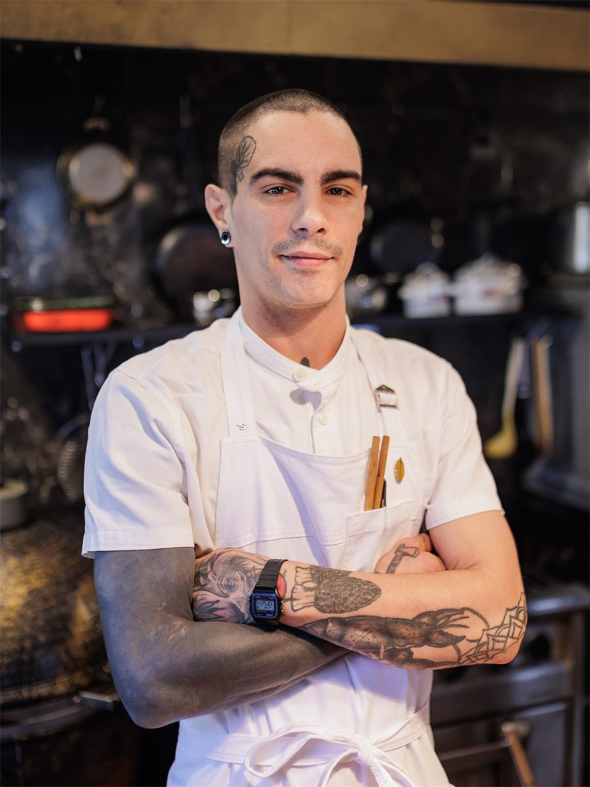
Tomi Bidauri
Chef, recolector y fermentista. Su cocina nace del vínculo con el entorno, la estacionalidad y el trabajo directo con productores locales. Fermentos, conservas, panes y procesos que respetan los tiempos de cada ingrediente.
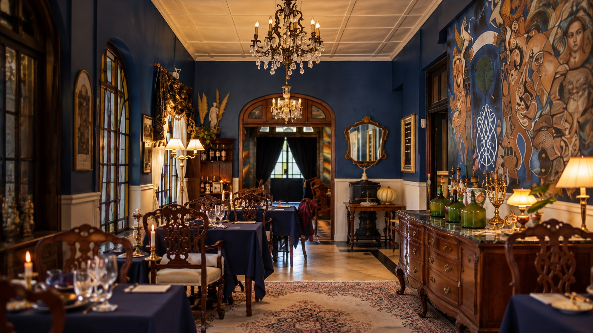
Cocina, arte y encuentros en Tandil.
CENER HOUSE · TANDIL
LA CASA
Una mesa, una obra, una conversación. En Cener, la cocina y la cultura comparten casa.
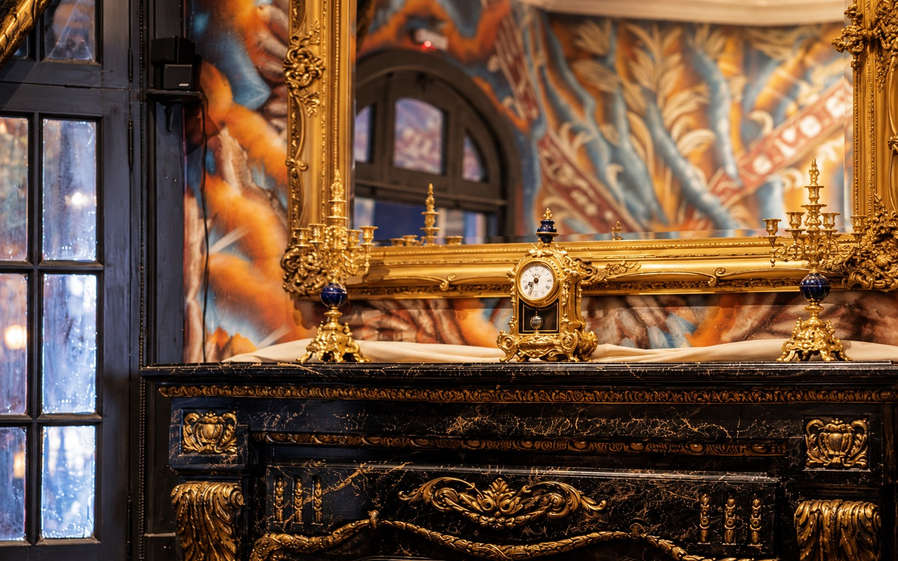
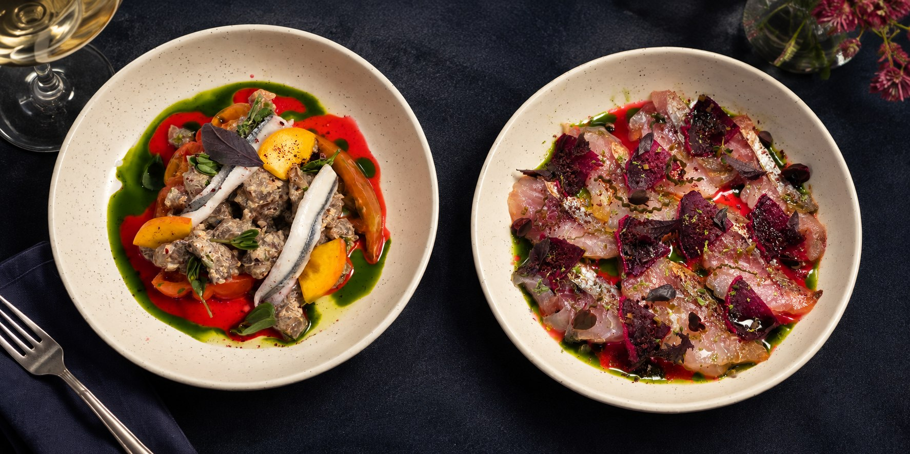
COCINA
Una propuesta para descubrir con todos los sentidos, en una casa que invita a compartir.
Explorar la cartaUN MOMENTO EN CENER
La luz, la mesa y los pequeños gestos que hacen que cada noche empiece mucho antes del primer plato.
CENER HOUSE · TANDIL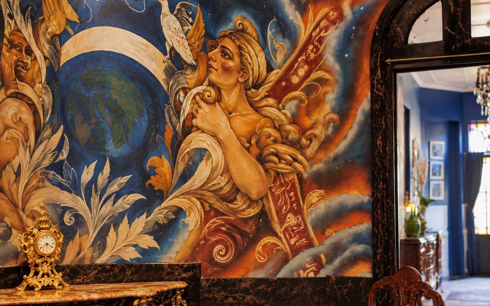
CULTURA
Arte, música y encuentros que hacen de cada visita una experiencia distinta.
Ver la agendaEVENTOS Y ENCUENTROS
La mesa abre conversaciones. Acá reunimos la agenda que viene y los encuentros que ya fueron parte de Cener House.
Nuevas fechas y experiencias tendrán su lugar acá.
Seguí la agenda en InstagramLas historias de cada encuentro tendrán su lugar en este archivo.
Explorar InstagramEL ÁLBUM DE LA CASA
Una mesa preparada, un plato que llega, las personas que hacen posible el encuentro.
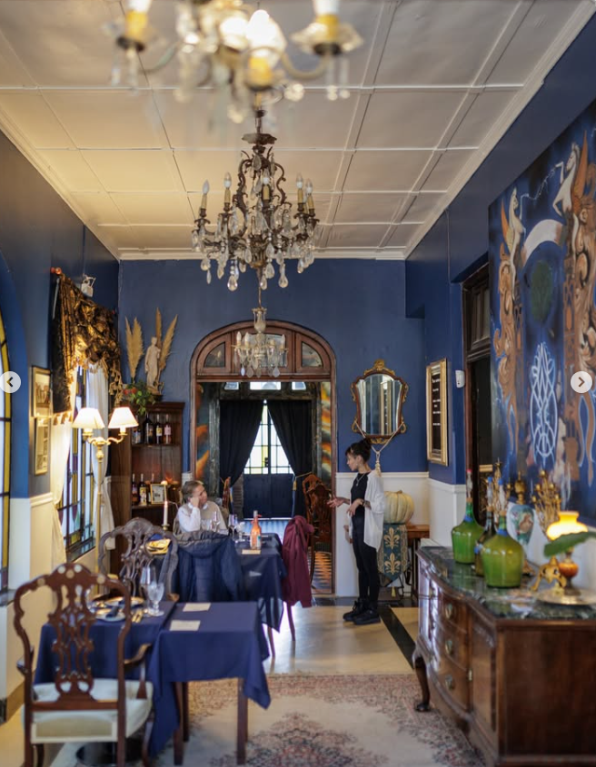
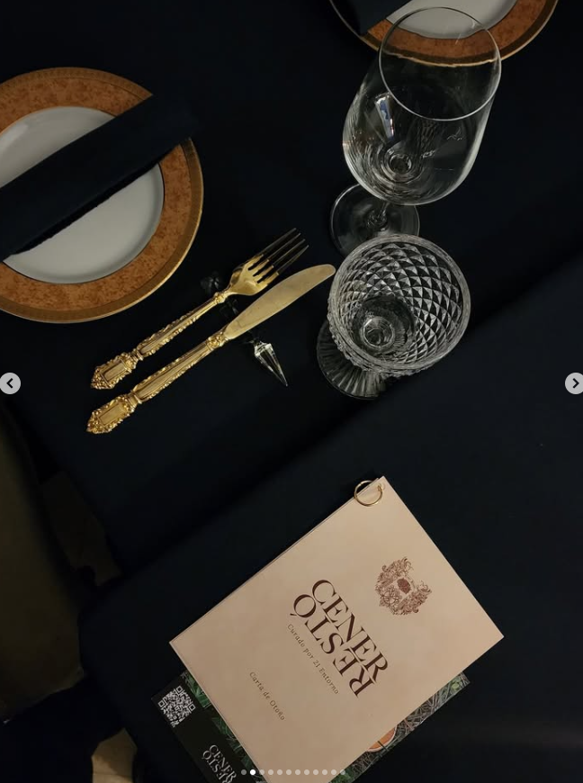
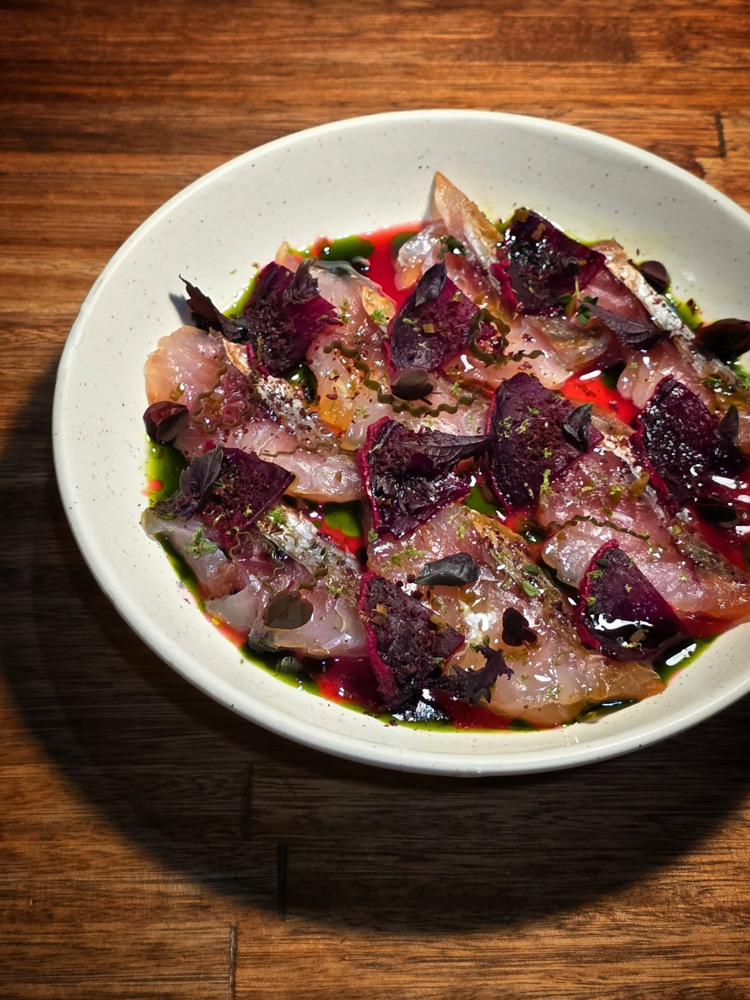
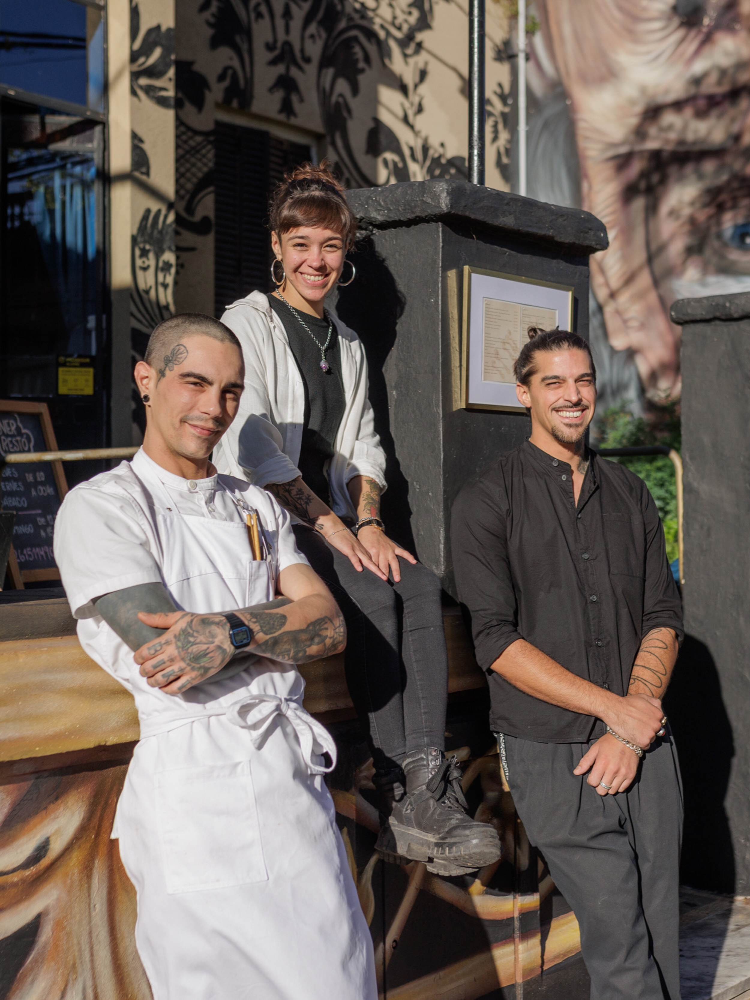
EL EQUIPO
Detrás de cada noche en Cener Restó hay un equipo pequeño que hace que todo suceda.

Chef, recolector y fermentista. Su cocina nace del vínculo con el entorno, la estacionalidad y el trabajo directo con productores locales. Fermentos, conservas, panes y procesos que respetan los tiempos de cada ingrediente.
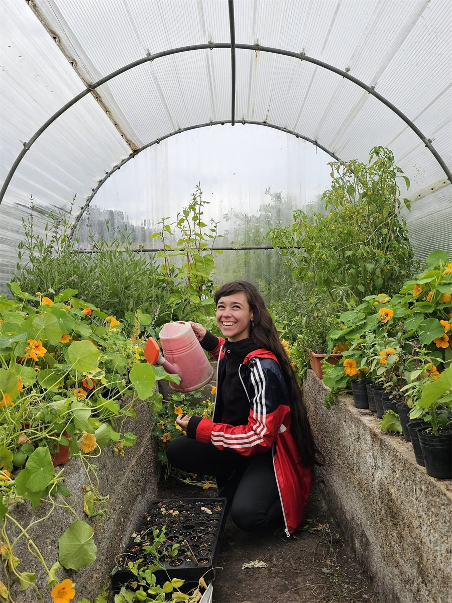
A cargo de la huerta, la selección de vinos y el servicio en sala. Con una mirada sensible y cercana, busca que cada detalle acompañe la experiencia, conectando los vinos, los productores y las historias detrás de cada plato.
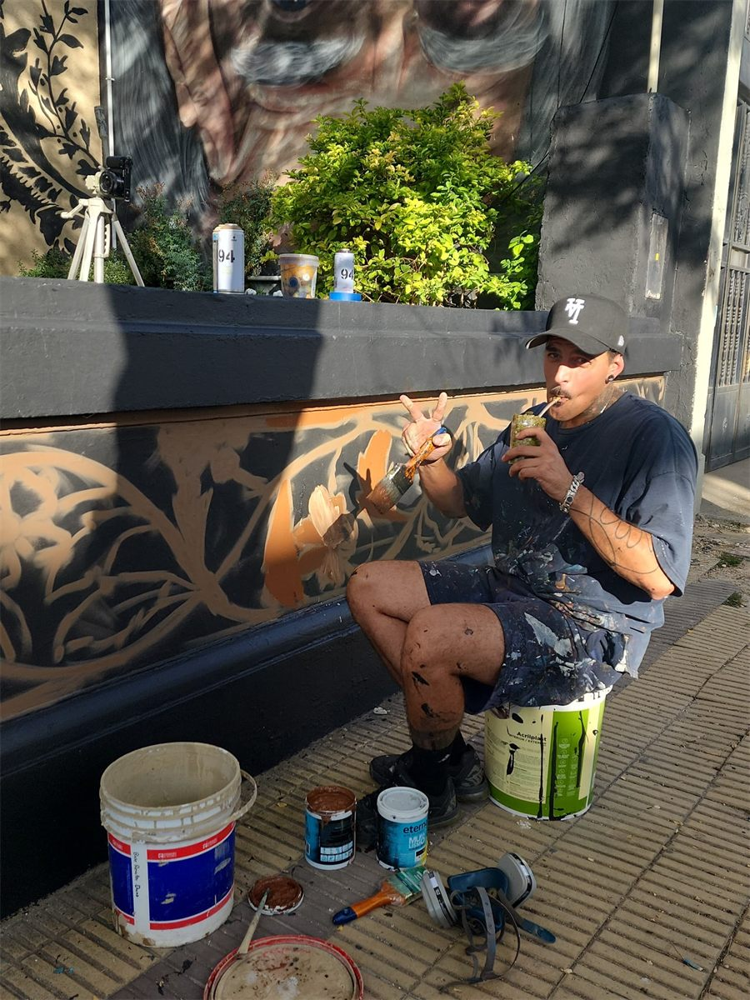
Creador de Cener House. Entre una obra, una idea y un proyecto, también lo vas a encontrar haciendo de runner, bachero, recibiendo proveedores o resolviendo lo que haga falta para que la experiencia funcione.
Somos un equipo chico, haciendo las cosas a nuestra manera. Cocinando, aprendiendo y construyendo un espacio donde el arte, la gastronomía y los encuentros se cruzan alrededor de una misma mesa.
VISITANOS
14 de Julio 467
Tandil, Buenos Aires
Para consultar disponibilidad y reservar una mesa, escribinos por Instagram.